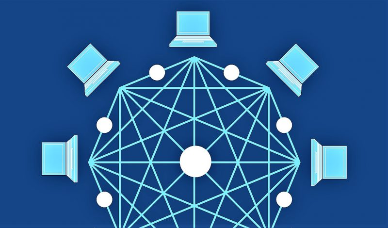

Redes de computadoras
¿Qué son las redes de computadoras?
Se entiende por redes de computadoras, redes de comunicaciones de datos o redes informáticas a un conjunto de sistemas informáticos interconectados mediante diversos dispositivos alámbricos o inalámbricos.A través de esos sistemas pueden compartir información en paquetes de datos, que se transmiten mediante impulsos eléctricos, ondas electromagnéticas o cualquier otro medio físico.
Las redes de computadoras no son diferentes, en su lógica de intercambio, de otros procesos de comunicación: cuentan con un emisor, un receptor y un mensaje, un medio a través del cual transmitirlo y una serie de códigos para garantizar el mutuo entendimiento.
La particularidad es que en este caso, los emisores y receptores son computadoras.

Tipos de redes de computadoras
LAN. Local Area Network (“Red de Área Local”) se llama a las redes de menor tamaño, como las de un locutorio o cyber café, o una casa.
MAN. Metropolitan Area Network (“Red de Área Metropolitana”) designa a redes de tamaño intermedio, como las de los campus universitarios o las grandes bibliotecas y empresas.
WAN. Wide Area Network (“Red de Área Amplia”) es como se llama a las redes de mayor envergadura y alcance, como la red global de Internet.

Elementos de una red de computadoras
Servidores. Los servidores son computadoras que procesan el flujo de los datos de la red, atendiendo a todos los demás y centralizando el control de la red. Operan como fiscales, al servicio de las demás (de allí su nombre). Anteriormente se llamaban “maestros”.
DANIEL ALCANTARA ESCAMILA